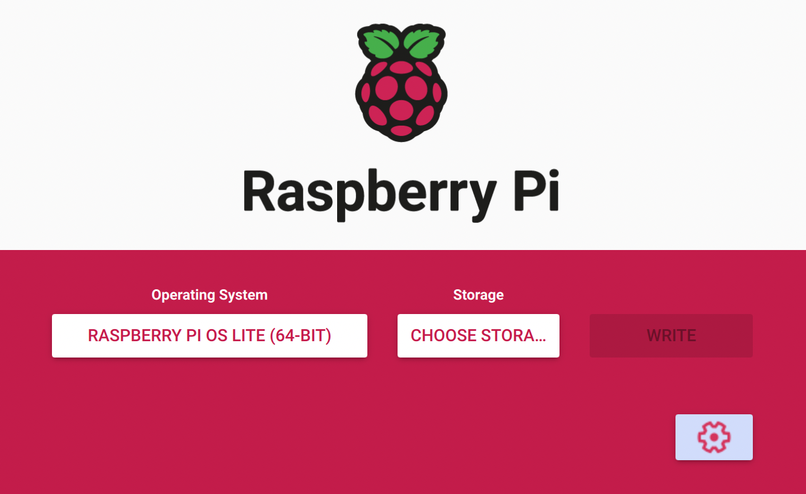
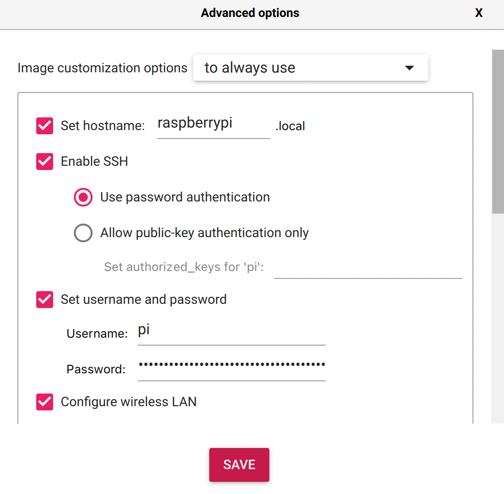

How to set up a Raspberry Pi
Why should you care? #
Did you ever wonder would be possible to do with a small computer? What could possibly be worth your time to get into programming a Raspberry Pi?
Yeah, me too. Especially all the time that could be necessary to maintain our weekend projects along the way. In last couple of months I used my Raspberry Pi to ease my life as digital nomad! That’s why, I want to share with you my journey!
Setting up the SD Card #
There are great tutorial on the process of setting up a Raspberry Pi. I wanted to keep it simple. So, I used Raspberry Pi OS. There’s an official tool for creating the SD card.

Because of my Raspberry Pi 4, I chose the 64 bit version. I also went with the lite version, meaning command line only.
If you want to set further settings like ssh, custom credentials and wireless LAN, click on the gearwheel.

Now, your SD card is ready to go! 🎉
Connect to your Raspberry Pi #
Your Pi boots automatically after powering it. Give it couple of moments!
Meanwhile, let’s make sure your ssh connection will run smoothly.
If you’d like to clear old references:
ssh-keygen -R raspberrypi.local
You can connect to your Pi using your chosen credentials:
ssh username@ip
e.g.: ssh pi@raspberrypi.local
The default credentials for any Raspberry Pi running Raspberry Pi OS:
username: pi
password: raspberry
Preventing WiFi Dropping #
If you want to be on the safe side, you should disable the power management for your wlan on the Pi. Open the following file.
sudo nano /etc/rc.local
Insert above the “exit 0” the following:
/sbin/iw wlan0 set power_save off
Overclocking #
sudo geany /boot/config.txt
The values:
# default 0, maximum 14
over_voltage=2
# default 700 MHz, maximum: 2400 MHz
arm_freq=1700
# default 500, maximum 650 MHz
gpu_freq=500
# default 0
force_turbo=0
Changing Credentials and Further Configuration #
If you’d like to change your credentials in the future, just use the raspi-config! There are many more things to tweak as well. Have a look!
sudo raspi-config
Updating Software #
You probably want to update your Raspberry Pi down the line. Just use this:
sudo apt-get update
sudo apt-get upgrade
Conclusion #
That was the fast track to get your Raspberry Pi up and running. If you need further assistance, check out the official documentation.
We’ll use this setup for the following topics: